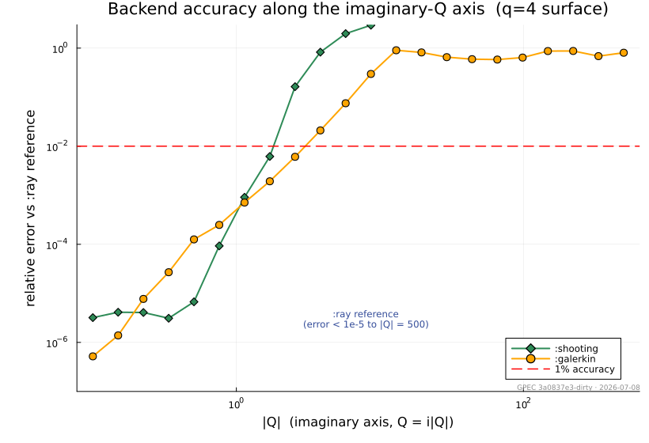
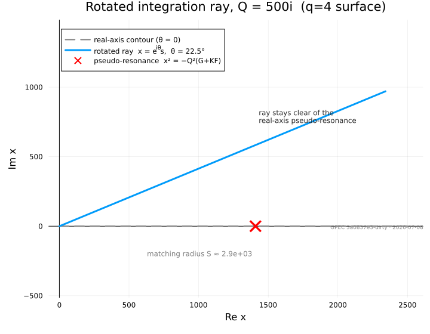
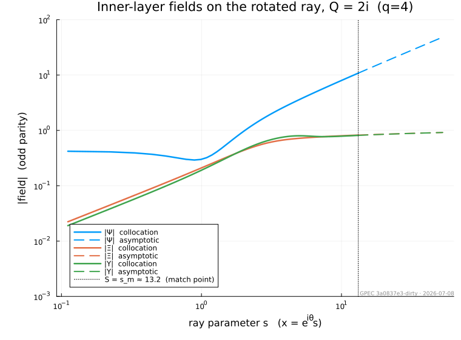
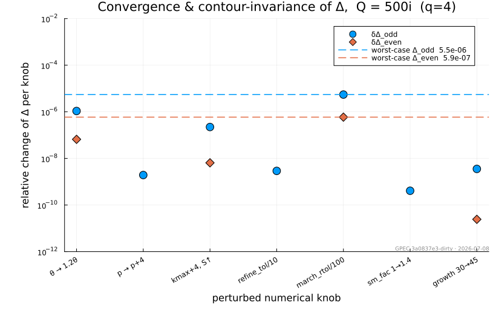

Inner Layer Module
The InnerLayer module solves the resistive inner-region problem of matched-asymptotic resistive-MHD stability: the thin layer around a rational surface where resistivity, inertia and the ideal singularity balance. Its output is the pair of parity-projected matching data $(\Delta_\mathrm{odd}, \Delta_\mathrm{even})$ that the outer ideal region (DCON/GPEC) matches to in order to obtain resistive growth rates, tearing $\Delta'$, and resistive interchange stability.
The module provides an abstract InnerLayerModel interface and one concrete model so far, the GGJ (Glasser–Greene–Johnson) layer, with three interchangeable solver backends. Future inner-layer models (SLAYER, kinetic layers) plug in through the same interface.
Two source papers define the equations and the asymptotic construction, and are cited by their equation numbers throughout the code and below:
- GWP2016 — A. H. Glasser, Z. R. Wang and J.-K. Park, Computation of resistive instabilities by matched asymptotic expansions, Phys. Plasmas 23, 112506 (2016).
- GW2020 — A. H. Glasser and Z. R. Wang, Asymptotic solutions and convergence studies of the resistive inner region equations, Phys. Plasmas 27, 012506 (2020).
Governing equations
At a rational surface the layer equations couple three fields — the perturbed flux $\Psi$ and two auxiliary layer variables $\Xi$ and $\Upsilon$ — as functions of the scaled distance $x$ from the surface. In the GWP2016 form (Eq. 11 ≡ GW2020 Eq. 1) they are
\[\begin{aligned} \Psi'' &= H\,\Upsilon' + Q\,(\Psi - x\,\Xi),\\[2pt] \Xi'' &= \frac{1}{Q^{2}}\Big[\,Q x^{2}\,\Xi - Q x\,\Psi - (E+F)\,\Upsilon - H\,\Psi'\,\Big],\\[2pt] \Upsilon''&= \frac{1}{Q}\Big[\,x^{2}\,\Upsilon - x\,\Psi - Q^{2}\big(G(\Xi-\Upsilon) - K(E\Xi + F\Upsilon + H\Psi')\big)\Big], \end{aligned}\]
where $E, F, G, H, K$ are the flux-surface-averaged equilibrium coefficients of GWP2016 Eq. (A8) and $Q$ is the dimensionless growth rate defined below. These coefficients are collected in GGJParameters.
Dimensionless scales
The layer is scaled by the local Lundquist number $S = \tau_R/\tau_A$ (ratio of resistive to Alfvén time). The displacement and growth-rate scales are
\[X_0 = S^{-1/3}, \qquad Q_0 = X_0/\tau_A \qquad \text{(GWP2016 Eqs. A14–A15)},\]
so a physical growth rate $\gamma$ maps to the scaled eigenvalue $Q = \gamma/Q_0$ (inner_Q) that appears in the equations above, and the scaled matching data are returned to physical units by the $X_0^{-2\sqrt{-D_I}} = S^{\,2\sqrt{-D_I}/3}$ rescaling (together with the $v_1^{\,2\sqrt{-D_I}}$ linear-scale factor; rescale_delta).
Mercier index and matching exponents
The premise of an inner-layer model is local Mercier stability. The Mercier interchange index and its resistive counterpart are
\[D_I = E + F + H - \tfrac14, \qquad D_R = E + F + H^2 = D_I + \big(H-\tfrac12\big)^2 \qquad \text{(GWP2016 A9–A10)},\]
(mercier_di, mercier_dr). For $D_I < 0$ the large-$x$ solutions are the two power laws $x^{r_\pm}$ with the Frobenius exponents
\[r_\pm = \tfrac32 \pm \sqrt{-D_I}, \qquad p_1 \equiv \sqrt{-D_I} \qquad \text{(GW2020 Eq. 49)}.\]
The matching datum $\Delta$ is the amplitude of the large solution $x^{r_+}$ when the small solution $x^{r_-}$ is normalized to unity (i.e. the ratio of large to small coefficient), in the physical (outer-matching) normalization. Imposing the two parities at $x=0$ (odd: $\Psi'(0)=\Xi(0)=\Upsilon(0)=0$; even: $\Psi(0)=\Xi'(0)=\Upsilon'(0)=0$) gives the pair $(\Delta_\mathrm{odd}, \Delta_\mathrm{even})$ of GWP2016 Eqs. (34)–(35).
Numerical method
Every figure on this page is computed on the $q = 4$ rational-surface benchmark (q4_surface_benchmark) — a fixed set of GGJ layer coefficients ($S = \tau_R/\tau_A \approx 4.6\times10^{6}$, $D_I \approx -0.31$) frozen into code from the $q = 4$ rational surface of the DIII-D-like (TkMkr H-mode) equilibrium of the resistive_resmets benchmark, at that case's per-surface $\eta$ and $\rho$. The well-conditioned real-$Q$ cross-check in the Validation section instead uses the Glasser & Wang (2020) Eq. (55) surface.
Solver backends
The GGJ model exposes three solvers through the solver type parameter of GGJModel; all consume the same large-$x$ asymptotic basis and return $\Delta$ in the same convention:
| backend | method | robust regime |
|---|---|---|
:shooting | backward stable shoot from $X_\mathrm{max}\to 0$ | $\lvert Q\rvert \ll 1$ |
:galerkin | Hermite-cubic finite-element (real axis) | drift onset $\lvert Q\rvert \sim 1$; 1% error by $\lvert Q\rvert \sim 4$ |
:ray (default) | rotated-contour spectral-element collocation | $\lvert Q\rvert \sim 500$ on/near the imaginary axis |
The difficulty is the large-$|Q|$ imaginary-$Q$ axis itself, where rotation and resistivity scans live: there the layer's pseudo-resonance at $x^2 = -Q^2(G+KF)$ sits directly on the real-$x$ integration path and the exponential dichotomy weakens, so both older backends degrade — :shooting through the dichotomy of the backward shoot, :galerkin through real-axis oscillation and the on-axis pseudo-resonance. (The poles of $\Delta(Q)$ itself lie on and near the real-$Q$ axis — they are the layer eigenvalues; $\Delta$ is smooth along the imaginary axis.) Measured against the :ray reference along the imaginary axis, :shooting holds to $|Q|\sim 1$ and :galerkin to $|Q|\sim 4$ (the 1% error crossings) before both lose all accuracy:

The :ray backend was written to reach the large-$|Q|$ imaginary-axis regime (rotation and resistivity scans) where these fail. The remainder of this section describes it.
Entire-solution formulation
:ray works with the plain state $v = (\Psi, \Xi, \Upsilon, \Psi', \Xi', \Upsilon')$ and writes the layer equations as the first-order system
\[\frac{dv}{dx} = M(x)\,v .\]
The coefficient matrix (the GGJ internal ode_matrix) is polynomial in $x$, so $x = 0$ is an ordinary point — the $x^{-2}/x^{-4}$ singularities of the GW2020 Eq. (2) scaled form $(x\Psi,\ \Psi'/x,\ \dots)$ are artifacts of that scaling, not of the equations. Because the coefficients are entire, the system continues analytically to complex $x$, which is what makes the contour rotation below legitimate.
The rotated ray
The equations are continued onto the ray
\[x = e^{i\theta}\, s, \qquad s \in [0, S], \qquad \theta = \tfrac14\arg Q,\]
The angle $\theta = \tfrac14\arg Q$ makes the parabolic-cylinder exponent of the outer solutions exactly real and clears the pseudo-resonance at $x^2 = -Q^2(G + K F)$, which on the imaginary-$Q$ axis is real and large and therefore sits directly on the un-rotated (real-$x$) contour. Rotating the contour lifts it off that point; $\theta = 0$ recovers a real-axis solve.

Spectral-element collocation BVP
On $[0, s_m]$ the system is discretized by a global Chebyshev spectral-element collocation boundary-value problem: right-biased (Radau-like) collocation at the Chebyshev–Lobatto nodes of each cell, three parity conditions at the ordinary-point origin $s = 0$, and six matching conditions at the outer edge,
\[v(S) - \Delta\, U_b - c_1 E_1 - c_2 E_2 = U_s ,\]
with the matching datum $\Delta$ and the two decaying-mode amplitudes $c_1, c_2$ carried as bordered unknowns. Here $U_s, U_b$ are the small and large power-like solutions and $E_{1,2}$ the forward-decaying exponential pair. No quantity is ever propagated across the layer, so the exponential dichotomy that limits the shooting backend never enters; the boundary condition splits it exactly.
The two parities differ only in their three $s=0$ rows, i.e. by a rank-3 update, so both are obtained from a single sparse LU factorization plus a Woodbury correction (the GGJ internal _solve_parities) rather than two factorizations. A residual-driven bisection refinement adds cells until the collocation residual meets tolerance, with a roundoff-plateau guard.
Far-field boundary and the inward march
The large-$x$ boundary data use the same inps Wasow asymptotic basis as the other backends (GW2020 Eqs. 3–52), evaluated at complex $x$ by RayAsymptotics.jl and applied at the series radius $S$ where the series is trusted (residual below tolerance; pick_smax). For large $|Q|$ the trusted radius $S$ can be far outside the collocation domain $s_m$, so the power-pair data are transported inward from $S$ to $s_m$ by an L-stable 2-stage Radau IIA march in the quotient modulo the decaying exponential pair — the subspace in which $\Delta$ is defined (the GGJ internal march_boundary). An L-stable implicit method is essential: the decaying pair grows under backward integration, so any explicit marcher is stability-limited to $O(\rho S^2)$ steps, while the Radau march damps the unresolvable backward-growing directions instead of amplifying them.
The damped-zone march runs in Complex{Double64} extended precision. At large $S$ the near-parallel power-pair geometry amplifies the structured backward error of the ill-conditioned implicit solves into $\Delta$-mixing of order $10^{-4}$ at $|Q| = 500$ in Float64; extended precision removes this floor, while the well-conditioned resolved band stays in Float64.
The result is a seamless numeric↔asymptotic solution: the collocation solution on $[0, s_m]$ and the analytic $u_\mathrm{small} + \Delta\,u_\mathrm{big}$ representation for $s \ge S$ share the same power-law tail — the overlap the outer-region matching relies on.

Validation and benchmarks
Cross-check against the Fortran rmatch solver. At the Glasser & Wang (2020) Eq. (55) operating point $Q = 0.1234$ (real) the :galerkin backend reproduces the Fortran rmatch deltac solver to $\sim 10^{-8}$:
| quantity | :galerkin (= Fortran to $10^{-8}$) | :ray |
|---|---|---|
| $\Delta_\mathrm{odd}$ | $3.698368\times 10^{4}$ | $3.69789\times 10^{4}$ |
| $\Delta_\mathrm{even}$ | $14.759721$ | $14.759715$ |
The large $\lvert\Delta_\mathrm{odd}\rvert \sim 4\times10^{4}$ means this operating point sits near a pole of $\Delta(Q)$, where every solver's error is amplified by the pole geometry; the $1.3\times10^{-4}$ :galerkin↔:ray difference in $\Delta_\mathrm{odd}$ (versus $4\times10^{-7}$ in $\Delta_\mathrm{even}$) is consistent with that amplification, not a defect of either backend.
Physical benchmark on the imaginary axis. On the $q=4$ rational-surface benchmark (q4_surface_benchmark, $S \approx 4.58\times10^6$, $D_I \approx -0.312$) the :ray backend is pinned at $Q = 500i$, a regime entirely beyond :galerkin:
| quantity | value at $Q = 500i$ |
|---|---|
| $\Delta_\mathrm{odd}$ | $2.4720 + 13.3540\,i$ |
| $\Delta_\mathrm{even}$ | $0.13750 + 0.74275\,i$ |
Convergence and contour invariance. Because $\Delta$ is an analytic invariant of the contour angle, re-solving with each numerical knob perturbed on an independent axis (delta_convergence) gives an honest error bar: at $Q = 500i$ the worst-case spread across all knobs is $\sim 5\times10^{-6}$ for $\Delta_\mathrm{odd}$ and $\sim 6\times10^{-7}$ for $\Delta_\mathrm{even}$. That is a single-machine error bar: across machines/BLAS builds the absolute values reproduce to $\sim 10^{-5}$ relative (the damped-zone implicit solves carry platform-dependent structured roundoff), which is why the table above quotes five significant figures.

Choosing a backend
:ray is the default — GGJModel() constructs GGJModel{:ray}(). It is the correct choice for $|Q| \gtrsim 1$ and for any $Q$ near the imaginary axis. :galerkin remains available and may be faster for very small real $|Q|$, but note the backends take disjoint numerical-knob keywords: pass GGJModel(solver=:galerkin) explicitly when supplying the Galerkin nx/xfac knobs — passing them to the default :ray backend throws a MethodError.
using GeneralizedPerturbedEquilibrium.InnerLayer
p = q4_surface_benchmark() # GGJParameters for the q=4 benchmark surface
γ = 500im * GGJ.q0(p) # physical rate placing Q on the imaginary axis at 500i
Δ = solve_inner(GGJModel(), p, γ) # (Δ_odd, Δ_even) with the default :ray backend
# Full result (raw Δ, contour, mesh, nodal solution, residuals) via solve_ray:
res = solve_ray(p, GGJ.inner_Q(p, γ))
res.Δ, res.resid, res.bc_condAPI Reference
InnerLayer
GeneralizedPerturbedEquilibrium.InnerLayer.InnerLayerModel — Type
InnerLayerModelAbstract supertype for resistive inner-layer models. Each concrete model is a small, parameter-free type tag (often parameterized by a solver-choice symbol) that selects a solve_inner method.
Implementations live in submodules of InnerLayer, e.g. InnerLayer.GGJ.
GeneralizedPerturbedEquilibrium.InnerLayer.solve_inner — Function
solve_inner(model::InnerLayerModel, params, γ::ComplexF64; kwargs...) -> SVector{2,ComplexF64}Compute the parity-projected matching data (Δ_odd, Δ_even) for the given inner-layer model, physical parameters params, and complex growth rate γ. Concrete models specialize this function.
The two returned components correspond to the homogeneous odd / even parity solutions of the half-domain inner-layer problem (parity boundary conditions imposed at the rational surface, X = 0). They are the Δ_{j,±}(γ) of Glasser, Wang & Park, Phys. Plasmas 23, 112506 (2016), Eqs. (34)–(35).
GeneralizedPerturbedEquilibrium.InnerLayer.solve_inner_profile — Function
solve_inner_profile(model::InnerLayerModel, params, γ::Number; kwargs...)
-> (; Δ, x, Ψ, Ξ, dψdx, rescale, ...)Compute the inner-layer matching data and the reconstructed layer field profiles for the given model — everything an outer↔inner matching driver needs from the layer, so drivers never touch model internals. Returns a named tuple with at least:
Δ— the same(Δ_odd, Δ_even)matching data assolve_innerx— real ascending grid in the model's stretched inner coordinate,x ≥ 0with the rational surface atx = 0Ψ,Ξ—length(x) × 2profiles, columns (odd, even) parity, in the model's inner normalization:Ψthe normal-field (reconnected-flux) variable,Ξthe displacementdψdx— conversion to poloidal-flux distance,δψ = dψdx · xrescale— amplitude factor converting the inner-normalized profiles to the outer δψ-normalized convention (companion of the Δ rescale)
Concrete models may return additional diagnostic fields (e.g. a solve-quality certificate). Solver-knob keywords are model-specific.
GGJ
GeneralizedPerturbedEquilibrium.InnerLayer.GGJ.GGJModel — Type
GGJModel{S} <: InnerLayerModelGlasser–Greene–Johnson resistive inner-layer model. S selects the solver backend: :ray (default; robust at large |Q| on/near the imaginary axis), :galerkin (real-axis Hermite FEM; degrades for |Q| ≳ 1), or :shooting (|Q| ≪ 1 only). The backends take different numerical-knob keywords.
GeneralizedPerturbedEquilibrium.InnerLayer.GGJ.GGJParameters — Type
GGJParametersGlasser–Greene–Johnson inner-layer parameters at one rational surface: the flux-surface-averaged equilibrium coefficients of GWP2016 Eq. (A8) plus the local timescales that scale the matching data back to physical Δ. Same fields as the Fortran resist_type:
| field | meaning |
|---|---|
E | Glasser interchange parameter (enters Mercier D_I = E+F+H−¼) |
F | Glasser interchange parameter |
G | Coupling coefficient (curvature × pressure gradient) |
H | Pfirsch–Schlüter coefficient |
K | Glasser parameter |
M | Mercier-related auxiliary parameter (held but not used here) |
taua | Local Alfvén time at the rational surface |
taur | Local resistive time at the rational surface |
v1 | Linear scale factor used in the V₁ rescaling |
ising | Index of the singular surface (traceability only) |
The growth rate γ is not stored here; it is a separate argument to solve_inner.
GeneralizedPerturbedEquilibrium.InnerLayer.GGJ.GGJShootingSystem — Type
GGJShootingSystemPrecomputed origin- and infinity-side arrays for the deltar.f-style backward shoot. Construct via _build_shooting_system.
GeneralizedPerturbedEquilibrium.InnerLayer.GGJ.InnerAsymptoticsCache — Type
InnerAsymptoticsCacheFrozen inps Wasow asymptotic-basis construction for one (GGJParameters, Q) pair, stored as SMatrix/SVector for allocation-free evaluation. Index convention: P[k+1] holds the k-th-order matrix P_k, etc.
Fields:
params, Q, kmax— input parameters and series truncation order.λ = 1/√Q— complex scale factor used by the Wasow split.R = (r₊, r₋)— Mercier-shifted Frobenius exponents at infinity (Eq. 49).T, Tinv— 6×6 eigenvector basis of A₀ (Eq. 7–8).J—(J₀, J₁, J₂), the J-rotated coefficient matrices (Eq. 9–10).P, B— splitting matrices, k = 0..kmax+2 (Eqs. 16, 22).K2— 2×2 inner working matrices, k = 0..kmax+2 (Eq. 32; entry k=0 unused).Qmat, Cmat— 2×2 inner-block transformation matrices, k = 0..kmax+2 (Eqs. 32–39).Dmat— 2×2 shearing matrices, k = 0..kmax (Eq. 43).Y0, Y0inv— lowest-order Y matrix and its inverse (Eq. 48; exponents from Eq. 49).Y, Z— 2×2 series matrices, k = 0..kmax (Eq. 52).
GeneralizedPerturbedEquilibrium.InnerLayer.GGJ.RaySolveResult — Type
RaySolveResultOutput of solve_ray. Δ is the rescaled matching data in the deltac output ordering (index 1 ↔ even-BC solution, 2 ↔ odd-BC solution, i.e. the same swap deltacsolve applies); Δraw is (isol=1, isol=2) in raw inps normalization before `rescaledelta`.
GeneralizedPerturbedEquilibrium.InnerLayer.GGJ._build_shooting_system — Method
_build_shooting_system(p::GGJParameters, Q::ComplexF64; nps=8, rtol=1e-6, fmax=1.0)Construct a GGJShootingSystem for the given parameters p and complex frequency Q, precomputing the origin and infinity asymptotic arrays used by the forward/backward shoots.
GeneralizedPerturbedEquilibrium.InnerLayer.GGJ._physical_ua_dua — Method
Convert the inps 6×2 basis (GW2020 Eq. 53) at x to physical (Ψ, Ξ, Υ) values and derivatives, each 3×2 (columns = the two power-like solutions). The /x and ·x factors undo the GW2020 Eq. (2) scaling 𝚿 ≡ (xΨ, Ξ, Υ).
GeneralizedPerturbedEquilibrium.InnerLayer.GGJ._physical_uv — Method
Coefficient matrices of the second-order system I·u'' − V·u' − U·u = 0 for u = (Ψ, Ξ, Υ) at x; port of inpsogetuv, 3×3 complex. These are A, B, C of GWP2016 Eqs. (12)–(15) with (I, V, U) = (A, −B, −C) and rows scaled by (1, Q², Q). The inline comments below give the row-by-row map to the inner equations.
GeneralizedPerturbedEquilibrium.InnerLayer.GGJ._solve_parities — Method
_solve_parities(Ic, Jc, Vc, rhs, ndof, N, p) -> (sol_odd, sol_even)Solve both parity systems from one factorization: the two matrices differ only in the 3 parity rows at s = 0 (a rank-3 update), so one sparse LU of the row-equilibrated odd system plus a Woodbury correction replaces the second factorization, which dominates the linear-algebra cost.
GeneralizedPerturbedEquilibrium.InnerLayer.GGJ.asymptotic_profile — Method
asymptotic_profile(params, res::RaySolveResult, srange) -> (; s, x, Ψ, Ξ, Υ)Evaluate the analytic representation u_small + Δ·u_big on the ray for s ≥ res.S; concatenated with solution_profile it should join the numeric solution seamlessly across the march zone.
GeneralizedPerturbedEquilibrium.InnerLayer.GGJ.asymptotic_residual — Method
asymptotic_residual(cache, x::Complex) -> SVector{2,Float64}GW2020 Eq. (54) residual of the two series columns at complex x.
GeneralizedPerturbedEquilibrium.InnerLayer.GGJ.asymptotic_residual — Method
asymptotic_residual(cache::InnerAsymptoticsCache, x::Real) -> SVector{2,Float64}Convergence measure Δ± of the two series columns at x (GW2020 Eq. 54): ‖dU − x·J(x)·U‖∞ / max(‖dU‖∞, ‖x·J(x)·U‖∞) per column. Mirrors inps_delta.
GeneralizedPerturbedEquilibrium.InnerLayer.GGJ.barycentric_eval — Method
barycentric_eval(t, w, vals, τ) -> valueEvaluate the interpolant of vals (matrix: nodes × components) at τ. Returns a vector over components.
GeneralizedPerturbedEquilibrium.InnerLayer.GGJ.barycentric_weights — Method
barycentric_weights(t) -> wBarycentric interpolation weights for nodes t (any distribution).
GeneralizedPerturbedEquilibrium.InnerLayer.GGJ.boundary_basis — Method
boundary_basis(params, Q, cache, θ, S; growth=30.0)
-> (Us, Ub, E, cond_est)Boundary data at s = S directly from the inps series (no march; used when the series is already valid at the BVP edge): Us, Ub are the small/large power-like solutions as 6-component states in the inps normalization, E the numerically-generated decaying pair, cond_est the condition number of the column-normalized basis.
GeneralizedPerturbedEquilibrium.InnerLayer.GGJ.build_asymptotics — Method
build_asymptotics(params::GGJParameters, Q::ComplexF64; kmax::Int=8) -> InnerAsymptoticsCacheConstruct the inps Wasow asymptotic basis (GW2020 Eqs. 7–53), truncating each power series at order kmax. Evaluate with evaluate_asymptotics; pick a cutoff with pick_xmax.
GeneralizedPerturbedEquilibrium.InnerLayer.GGJ.cheblobatto — Method
cheblobatto(p) -> (t, D)Chebyshev–Lobatto nodes on [-1, 1] in ASCENDING order and the spectral differentiation matrix D for those nodes (Trefethen's cheb, reflected).
GeneralizedPerturbedEquilibrium.InnerLayer.GGJ.decaying_pair — Method
decaying_pair(params, Q, θ, S; growth=30.0, seed=20260707, dp_res=20.0) -> E (6×2)Orthonormal basis of the forward-decaying pair at s = S on the ray: random seeds integrated backward over [S, S+ΔS] with fully-resolved RK4, ΔS sized so the pair separates from everything else by ≈ growth e-folds.
GeneralizedPerturbedEquilibrium.InnerLayer.GGJ.delta_convergence — Method
delta_convergence(params, Q; verbose=true, refine_tol=1e-9,
max_rounds=16, max_cells=12000, kwargs...)
-> (; Δ, spread, base, table)Error bar for the matching data: solve at a strict baseline, then re-solve with each numerical knob perturbed on an independent axis (contour angle θ, element order p, series order/radius, refinement depth, march tolerance, handoff radius, purification e-folds — see variations below) and report the relative change of (Δ₁, Δ₂) per knob. θ is perturbed outward only: inward moves toward the x² ≈ −Q²(G+KF) pseudo-resonance and measures the perturbed solve, not the baseline. spread is the per-parity worst case over all knobs.
GeneralizedPerturbedEquilibrium.InnerLayer.GGJ.evaluate_asymptotics — Method
evaluate_asymptotics(cache, x::Complex; derivative=true, apply_T=true) -> (U, dU)Complex-x version of evaluate_asymptotics (GW2020 Eq. 53; principal branch of x^r, valid for |arg x| < π). Columns of the 6×2 U are the two power-like solutions in the GW2020 Eq. (2) state convention u = (xΨ, Ξ, Υ, (xΨ)'/x, Ξ'/x, Υ'/x).
GeneralizedPerturbedEquilibrium.InnerLayer.GGJ.evaluate_asymptotics — Method
evaluate_asymptotics(cache::InnerAsymptoticsCache, x::Real; derivative=true, apply_T=true) -> (U, dU)Evaluate the inps basis at x > 0: U is 6×2 with columns the two power-like solutions (GW2020 Eq. 53), dU their x-derivatives (nothing unless derivative=true). apply_T=false leaves the result in the J-rotated basis used by the residual check.
GeneralizedPerturbedEquilibrium.InnerLayer.GGJ.evaluate_solution — Method
evaluate_solution(res::RaySolveResult, s::Real; isol=1) -> SVector{6,ComplexF64}Evaluate the solved state v = (Ψ, Ξ, Υ, Ψ', Ξ', Υ') at ray parameter s (diagnostic; barycentric interpolation on the containing cell).
GeneralizedPerturbedEquilibrium.InnerLayer.GGJ.glasser_wang_2020_eq55 — Method
glasser_wang_2020_eq55(; taua=1.0, taur=1e6, v1=1.0) -> GGJParametersD-shaped aspect-ratio-2, q = 2 surface from GW2020 Eq. 55 (companion operating point Q = 1.234e-1, their Fig. 1); benchmark for the inps basis convergence (their Figs. 1–4). Eq. 55 does not tabulate Δ(Q) — its Δ_± (Eq. 54) is a convergence norm — so quantitative Δ cross-checks need a Fortran rmatch/inps run. Timescales default to canonical normalization; override for physical cases.
GeneralizedPerturbedEquilibrium.InnerLayer.GGJ.initial_breaks — Method
initial_breaks(params, Q, θ, S, p; cfl=0.4, drop=40.0, ratio=1.3,
hmax_frac=0.08) -> Vector{Float64}Build the initial cell-boundary vector 0 = s₀ < s₁ < … = S using the three-zone grading described in the header. cfl ≈ resolved-exponential rate per node; drop = e-folds after which decaying exponential content is considered machine-dead; ratio = geometric growth in the outer zone.
GeneralizedPerturbedEquilibrium.InnerLayer.GGJ.inner_Q — Method
inner_Q(p::GGJParameters, γ::Number) -> ComplexF64Scaled inner-layer growth rate Q = γ / Q₀ (GWP2016 Eq. A15).
GeneralizedPerturbedEquilibrium.InnerLayer.GGJ.march_boundary — Method
march_boundary(params, Q, θ, S, s_m, Us, Ub; rtol=1e-9, growth=30.0, seed=20260707)
-> (Us_m, Ub_m, F)Transport the power-pair boundary data from the series radius S inward to s_m along the ray, modulo the decaying exponential pair (the quotient in which Δ is defined). 2-stage Radau IIA (L-stable) with Φ-budgeted purges against a carried decaying frame; explicit marchers cannot do this at large S (see file header).
GeneralizedPerturbedEquilibrium.InnerLayer.GGJ.mercier_di — Method
mercier_di(p::GGJParameters) -> Float64Mercier interchange index D_I = E + F + H − 1/4 (GWP2016 Eq. A9); D_I > 0 means local ideal interchange instability.
GeneralizedPerturbedEquilibrium.InnerLayer.GGJ.mercier_dr — Method
mercier_dr(p::GGJParameters) -> Float64Resistive interchange index D_R = E + F + H² (GWP2016 Eq. A10); D_R > 0 means local resistive interchange instability.
GeneralizedPerturbedEquilibrium.InnerLayer.GGJ.ode_matrix — Method
ode_matrix([CT,] p::GGJParameters, Q, x) -> SMatrix{6,6,CT}Coefficient matrix M(x) of dv/dx = M v, v = (Ψ, Ξ, Υ, Ψ', Ξ', Υ'), for real or complex x. CT selects the element type (default ComplexF64; Complex{Double64} for the extended-precision march).
GeneralizedPerturbedEquilibrium.InnerLayer.GGJ.p1 — Method
p1(p::GGJParameters) -> Float64p₁ = √(−D_I), setting the large-x Frobenius exponents r± = 3/2 ± p₁ (GW2020 Eq. 49). Throws unless D_I < 0 (Mercier-stable required).
GeneralizedPerturbedEquilibrium.InnerLayer.GGJ.parity_rows — Method
parity_rows(isol) -> SVector{3,Int}Component indices of v = (Ψ, Ξ, Υ, Ψ', Ξ', Υ') that vanish at s = 0 for each parity solution, mirroring deltacsetboundary:
isol = 1("odd"): Ψ'(0) = 0, Ξ(0) = 0, Υ(0) = 0 → components (4, 2, 3)isol = 2("even"): Ψ(0) = 0, Ξ'(0) = 0, Υ'(0) = 0 → components (1, 5, 6)
GeneralizedPerturbedEquilibrium.InnerLayer.GGJ.physical_ua_dua — Method
physical_ua_dua(cache, x::Number) -> (ua, dua)Convert the inps 6×2 basis at (possibly complex) x to physical (Ψ, Ξ, Υ) values and x-derivatives, each 3×2 (column 1 = large power solution, 2 = small). Same map as the deltac inpso_get_ua/dua convention.
GeneralizedPerturbedEquilibrium.InnerLayer.GGJ.pick_smax — Method
pick_smax(params, Q; θ=angle(Q)/4, eps=1e-9, kmax=12, cache=nothing,
slogmin=-1.0, slogmax=6.5, dslog=0.01) -> (S, cache, achieved)Ray analog of pick_xmax: the smallest s at which the series residual along x = e^{iθ}s drops below eps. If never reached, returns the residual-minimizing s with achieved = false.
GeneralizedPerturbedEquilibrium.InnerLayer.GGJ.pick_xmax — Method
pick_xmax(params, Q; eps=1e-7, kmax=8, xlogmin=-1.0, xlogmax=4.0, dxlog=0.01) -> (x_max, cache)Sweep x log-uniformly and return the smallest x where the GW2020 Eq. (54) residual drops below eps, plus the cache built along the way. Throws if the tolerance is never reached in the sweep range. Mirrors inps_xmax.
GeneralizedPerturbedEquilibrium.InnerLayer.GGJ.q0 — Method
q0(p::GGJParameters) -> Float64Growth-rate scale Q₀ = X₀ / τ_A (GWP2016 Eq. A15); physical rate = Q₀ Q.
GeneralizedPerturbedEquilibrium.InnerLayer.GGJ.q4_surface_benchmark — Method
q4_surface_benchmark() -> GGJParametersPhysical q = 4 rational-surface benchmark point (S = τR/τA ≈ 4.58×10⁶, DI ≈ −0.31166, α = √(−DI) ≈ 0.5583). Primary validation point for the rotated-ray backend on the imaginary-Q axis (pinned at Q = 100i, 500i in the test suite).
GeneralizedPerturbedEquilibrium.InnerLayer.GGJ.rescale_delta — Method
rescale_delta(Δ, p::GGJParameters) -> SVector{2,ComplexF64}Rescale the matching data to physical Δ by S^(2√(−D_I)/3) · v₁^(2√(−D_I)) (GWP2016 Sec. IV), element-wise on (Δ_odd, Δ_even).
GeneralizedPerturbedEquilibrium.InnerLayer.GGJ.sfac — Method
sfac(p::GGJParameters) -> Float64Lundquist number S = τ_R / τ_A.
GeneralizedPerturbedEquilibrium.InnerLayer.GGJ.solution_profile — Method
solution_profile(res::RaySolveResult; npc=8) -> (; s, x, Ψ, Ξ, Υ)Reconstruct (Ψ, Ξ, Υ) on the solution contour, npc points per cell; each field is npts × 2 with columns (odd, even) and x = e^{iθ}s. For rotated solves the fields live on the ray — continuation back to real x is a separate (unstable) problem, by design.
GeneralizedPerturbedEquilibrium.InnerLayer.GGJ.solve_inner_converged — Method
solve_inner_converged(::GGJModel{:galerkin}, params::GGJParameters, γ::Number;
rtol=1e-2, max_levels=6, kwargs...)
-> (; delta, converged, err, kmax, xfac, nx, nlevels)Convergence-guarded Galerkin solve: jointly refines the three coupled accuracy knobs (series order kmax, asymptotic reach xfac, grid nx scaled to hold cells-per-unit-x ≈ cells_per_unit) until the per-component relative change of (Δ₁, Δ₂) drops below rtol, or max_levels is hit (converged=false). The metric is per real/imag component with a 5% significance floor, so a converged norm cannot mask a wrong small component.
GeneralizedPerturbedEquilibrium.InnerLayer.GGJ.solve_ray — Method
solve_ray(params::GGJParameters, Q; θ=angle(Q)/4, kmax=12, p=12, S=nothing,
smax_tol=1e-9, refine_tol=1e-8, max_rounds=8, max_cells=6000,
verbose=false, kwargs...) -> RaySolveResultSolve the GGJ inner-layer problem on the rotated ray x = e^{iθ}s. Δ follows the deltac output convention (swap + rescale_delta), directly comparable to the :galerkin backend. θ = 0 reproduces a real-axis solve; S defaults to the inps series-residual radius (pick_smax); p is the polynomial order per spectral element; remaining keywords are march/mesh knobs (see march_boundary, initial_breaks, decaying_pair).
GeneralizedPerturbedEquilibrium.InnerLayer.GGJ.x0 — Method
x0(p::GGJParameters) -> Float64Inner-layer length scale X₀ = S^(−1/3) (GWP2016 Eq. A14); physical x = X₀ X.
GeneralizedPerturbedEquilibrium.InnerLayer.solve_inner — Method
solve_inner(::GGJModel{:galerkin}, params::GGJParameters, γ::Number;
kmax::Int=8, nx::Int=512, nq::Int=4, pfac::Float64=1.0,
cutoff::Int=5, xfac::Float64=1.0, tol_res::Float64=1e-5)
-> SVector{2,ComplexF64}Solve the GGJ inner-layer matching problem using the Hermite-cubic finite element (Galerkin) method (GWP2016 Sec. III). Direct port of rmatch/deltac.f in the "resonant + noexp + inps" configuration.
Returns the parity-projected matching data (Δ₁, Δ₂) (GWP2016 Eqs. 34–35) with the X₀^{2√(−D_I)} physical rescaling applied. The ordering matches deltac.f's output convention (swapped relative to deltar.f).
GeneralizedPerturbedEquilibrium.InnerLayer.solve_inner — Method
solve_inner(::GGJModel{:ray}, params::GGJParameters, γ::Number; kwargs...)
-> SVector{2,ComplexF64}Rotated-ray backend: converts γ via inner_Q, forwards keywords to solve_ray, and returns (Δ₁, Δ₂) in the shared backend convention (deltac swap + physical rescale). Preferred for |Q| ≳ 1 and near the imaginary axis; use solve_ray directly when the full RaySolveResult is wanted.
GeneralizedPerturbedEquilibrium.InnerLayer.solve_inner — Method
solve_inner(::GGJModel{:shooting}, params::GGJParameters, γ::Number;
reltol::Float64=1e-6, abstol::Float64=1e-6,
rtol_origin::Float64=1e-6, nps::Int=8,
fmax::Float64=1.0, solver=Tsit5()) -> SVector{2,ComplexF64}Backward shoot in the origin-diagonalized 4×4 basis; direct port of rmatch deltar.f. Returns (Δ₁, Δ₂) rescaled to physical units, index ordering as the Fortran deltar output. rtol_origin sets the origin-series truncation and tmin. Not for production use — see the file header.
GeneralizedPerturbedEquilibrium.InnerLayer.solve_inner_profile — Method
solve_inner_profile(::GGJModel{:galerkin}, params::GGJParameters, γ::Number; kwargs...)
-> (; Δ, x, Ψ, Ξ, dψdx, rescale)Hermite-FEM implementation of the solve_inner_profile interface: real-axis solve, so Δ and the profiles come from the same solution. Same numerics/kwargs as solve_inner(GGJModel(; solver=:galerkin), ...).
GeneralizedPerturbedEquilibrium.InnerLayer.solve_inner_profile — Method
solve_inner_profile(::GGJModel{:ray}, params::GGJParameters, γ::Number;
npc=8, certify_rtol=1e-3, kwargs...)
-> (; Δ, x, Ψ, Ξ, dψdx, rescale, certΔ)Rotated-ray implementation of the solve_inner_profile interface. The certified Δ comes from the optimal-contour solve at θ = arg(Q)/4 (robust for |Q| ≳ 1, where real-axis methods drift); the profiles come from a θ = 0 re-solve on the real axis, valid at physical (RPEC) |Q| since the on-axis pseudo-resonance is a regular point resolved by the BVP refinement. The θ=0-vs-optimal-θ Δ agreement doubles as a runtime certificate (two maximally different contours through the same entire solutions): the relative mismatch is returned as certΔ and warns above certify_rtol. npc sets the profile points per mesh cell; extra keywords forward to both solve_ray calls (θ is fixed by the method — do not pass it).
GeneralizedPerturbedEquilibrium.InnerLayer.solve_inner_profile — Method
solve_inner_profile(params::GGJParameters, γ::Number; kwargs...)Diagnostic variant of solve_inner(GGJModel(:galerkin), ...) that also returns the reconstructed inner-layer field profiles. Returns (Δ, Q, profile) where profile = (x, Ψ, Ξ, Υ) (Ψ = inner ξ, columns odd/even parity). Same numerics/kwargs as solve_inner; for investigating resonant-layer structure vs resistivity, not the production matching path.